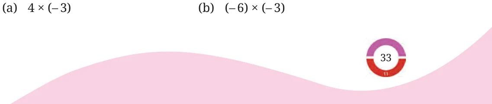
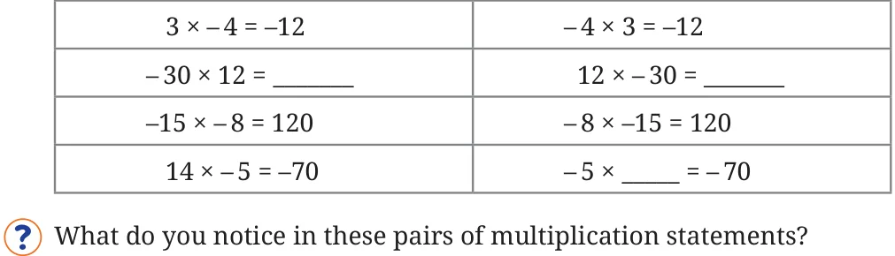
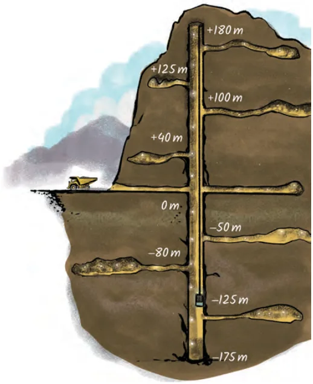

Find the following products.

- (c)( \(- 5) \times\) ( \(- 1)\) (d) ( \(- 8) \times 4\)
- (e)( \(- 9) \times 10\) (f) \(10 \times\) ( \(- 17)\)
Consider the expression \(1 \times a\). We know that the value of this expression is ‘a’ for all positive integers.
Is this true for all negative integers too? Using the token model, we put ‘a’ negatives into the bag just once. After this, the bag contains ‘a’ negatives. For example, if ‘a’ is \(- 5 (5\) negatives), then the bag contains 5 negatives, i.e., \(- 5\). So,
\(1 \times a = a\) (for all integers a, both positive and negative).
What is the value of the expression \(- 1 \times a\)? When ‘a’ is positive, then from our observations on integer multiplication, the product has the same magnitude as ‘a’ but is negative. When ‘a’ is negative, then the product has the same magnitude as ‘a’ but is positive. In each case, we notice that the product is the additive inverse of the multiplicand ‘a’. Thus, \(- 1 \times a = - a\) (for all integers a).
In the case of integers, is the product the same when we swap the multiplier and the multiplicand? Try this for some numbers. Observe the following pairs of multiplications (fill in the blanks where needed):

The product is the same when we ‘swap’ the multiplier and multiplicand. Earlier, we have seen a similar property with addition. Will this always happen? The magnitude of the product does not change when the multiplier and the multiplicand are swapped. This is because the magnitude of the product depends only on the magnitudes of the multiplier and the multiplicand, and we know that the product of two positive integers
Does the sign of the product change if we swap the multiplier and multiplicand? If both are positive or both are negative, the product is positive before and after swapping. So the sign does not change in this case. If one is positive and the other negative, the product is negative before and after swapping. So the sign does not change in this case either. Hence, the product does not change when the multiplier and multiplicand are swapped, whatever their signs may be. Thus, multiplication is commutative for integers. In general, for any two integers, a and b, we can say that \(a \times b = b \times a\).
Brahmagupta’s Rules for Multiplication and Division of Positive and Negative Numbers
Just like for addition and subtraction of integers, Brahmagupta in his Brāhmasphuṭasiddhānta (628 CE) also articulated explicit rules for integer multiplication and division. He used the notions of fortune (dhana) for positive values and debt (ṛṇa) for negative values. In his Brāhmasphuṭasiddhānta (18.30-32), Brahmagupta wrote: “The product or quotient of two fortunes is a fortune. The product or quotient of two debts is a fortune. The product or quotient of a debt and a fortune is a debt. The product or quotient of a fortune and a debt is a debt.” This represented the first time that rules for multiplication and division of positive and negative numbers were articulated, and was an important step in the development of arithmetic and algebra! Example 1: An exam has 50 multiple choice questions. 5 marks are given for every correct answer and 2 negative marks for every wrong answer. What are Mala’s total marks if she had 30 correct answers and 20 wrong answers? Solution: We use positive and negative integers. The mark for each correct answer is a positive integer 5 and for each wrong answer is a negative integer \(- 2\). Marks for 30 correct answers \(= 30 \times 5\). Marks for 20 wrong answers \(= 20 \times\) ( \(- 2)\). Thus the arithmetic expression for 30 correct answers and 20 wrong answers is:
\(30 \times 5 + 20 \times\) ( \(- 2) = 150 +\) ( \(- 40)\)
What are the maximum possible marks in the exam? What are the minimum possible marks?
Example 2: There is an elevator in a mining shaft that moves above and below the ground. The elevator’s positions above the ground are represented as positive integers and positions below the ground are represented as negative integers.

- (a)The elevator moves 3 metres
per minute. If it descends into the shaft from the ground level (0), what will be its position after one hour?
- (b)If it begins to descend from
15 m above the ground, what will be its position after 45 minutes?
Solution:
Solution to part (a) of the question:
Method 1:
We can model this using subtraction. The elevator moves at 3 metres per minute. So in one hour it moves 180 metres \((60 \times 3)\). If it started at ground level (0 metres) and descended, we should subtract 180 from 0.
\(0 - 180 =\) ( \(- 180)\).
So, it will reach the ( \(- 180)\) metre position, which is 180 metres below the ground.
Method 2:
Let us say that the speed and direction of the elevator are represented by an integer (metres per minute). It is +3 when it is moving up and it is ( \(- 3)\) when moving down. Since the elevator is moving down, the speed is ( \(- 3)\) metres per minute. It moves for 60 minutes. So it goes
\(60 \times\) ( \(- 3) =\) ( \(- 180)\).
The position of the elevator after 60 minutes is 180 metres below the ground level.
Find the solution to part (b) using Method 1 described above. Solution to part (b) using Method 2:
Starting Position \(= 15\). Distance Travelled = The elevator moves down at the speed of 3 metres per minute for 45 minutes, that is, \((45 \times\) ( \(- 3))\). So, Ending Position \(= 15 + (45 \times\) ( \(- 3))\)
\(= 15 +\) ( \(- (45 \times 3)) = 15 +\) ( \(- 135) =\) ( \(- 120)\).
The elevator will be 120 metres below the ground.